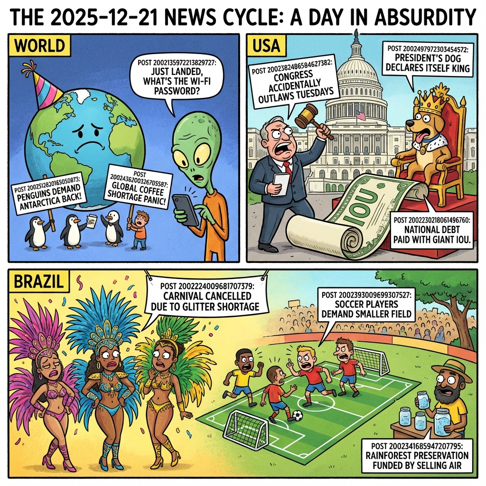

The Daily Globe: Pakistan: Imran Khan and Wife Sentenced to 17 Years in Prison, Controversy Over Redacted Epstein FBI File Release, and Federal Police Operation Targets PL Leaders Cavalcante and Jordy
Published on 2025-12-21

World
- Pakistan: Imran Khan and Wife Sentenced to 17 Years in Prison
Former Prime Minister Imran Khan and his wife, Bushra Bibi, were sentenced to 17 years in prison in the Toshakhana-2 graft case, sparking widespread protests and claims of political persecution.
- Gaza Humanitarian Crisis Deepens Amid Winter Freeze
Medical organizations and international observers have reported children freezing to death in Gaza as blockades and ongoing attacks hinder the delivery of critical winter aid and fuel.
- U.S. Navy Seizes Second Venezuelan Oil Vessel
Tensions in South America have escalated after U.S. forces intercepted and seized another vessel carrying Venezuelan oil off the coast of Caracas, as part of a ramped-up pressure campaign.
- Mercosur-EU Trade Deal Faces Final Hurdle
Intense negotiations continue as Brazil's Vice President Geraldo Alckmin expresses hope for a rapid signing of the long-delayed Mercosur-European Union trade agreement amid European agricultural protests.
- UK Labour Party 'Sleaze' Scandal and Lobbying Reforms
The Labour government faces backlash over proposed lobbying reforms that critics claim are designed to muffle press freedom and shield officials from scrutiny following multiple ethics complaints.
USA
- Controversy Over Redacted Epstein FBI File Release
The Department of Justice is facing legal threats and public outrage after releasing a limited, heavily redacted set of Jeffrey Epstein's FBI files, leading to allegations of a cover-up for high-profile figures.
- Outcry Over NYC Deportation of 6-Year-Old Boy
Public anger has erupted following the deportation of a 6-year-old boy and his father from New York City to China, highlighting the human cost of current immigration enforcement policies.
- Timeline Discrepancies in Brown/MIT Suspect Autopsy
An autopsy report for a high-profile suspect in the Brown University and MIT-related killings revealed he died two days before being found, sparking criticism of law enforcement's search efforts.
- Congressional Gridlock Over Medical Debt and Gun Control
Semantic trends on social media show a growing divide and public frustration over stalled federal legislation aimed at cancelling medical debt and implementing stricter gun control measures.
- Trump Administration Ramps Up Regional Pressure on Venezuela
The administration's aggressive seizure of maritime assets near Venezuela has sparked a domestic debate between those favoring a 'maximum pressure' foreign policy and those fearing regional destabilization.
Brazil
- Federal Police Operation Targets PL Leaders Cavalcante and Jordy
The Federal Police conducted a high-stakes operation against congressmen Sóstenes Cavalcante and Carlos Jordy, investigating alleged suspicious movements totaling R$ 28.6 million in parliamentary amendments.
- AGU Files Lawsuits Against Entities for Illegal Pension Deductions
The Attorney General's Office (AGU) has launched legal actions against eight entities, including one linked to the PT, for allegedly making unauthorized and illegal deductions from INSS retirement pensions.
- Banco Master Investigation Points to R$ 12 Billion Fraud
A massive financial investigation has emerged involving Banco Master, with allegations of a fraud scheme estimated at R$ 12 billion, leading to calls for new ethics codes for Supreme Court justices.
- Federal Government Cancels R$ 1 Million Funding for Zezé Di Camargo Show
A major controversy erupted after the federal government cancelled a R$ 1 million allocation intended for a New Year's Eve performance by country singer Zezé Di Camargo in Pará.
- Hugo Motta Expedites Votes to Clear 2025 Legislative Agenda
Speaker candidate Hugo Motta is facing scrutiny for fast-tracking year-end votes to clear the legislative slate, a move seen as an attempt to align with the Lula administration ahead of 2026.
Topic Index
- World: Pakistan: Imran Khan and Wife Sentenced to 17 Years in Prison — Former Prime Minister Imran Khan and his wife, Bushra Bibi, were sentenced to 17 years in prison in the Toshakhana-2 graft case, sparking widespread protests and claims of political persecution
- World: Gaza Humanitarian Crisis Deepens Amid Winter Freeze — Medical organizations and international observers have reported children freezing to death in Gaza as blockades and ongoing attacks hinder the delivery of critical winter aid and fuel
- World: U.S. Navy Seizes Second Venezuelan Oil Vessel — Tensions in South America have escalated after U
- World: Mercosur-EU Trade Deal Faces Final Hurdle — Intense negotiations continue as Brazil's Vice President Geraldo Alckmin expresses hope for a rapid signing of the long-delayed Mercosur-European Union trade agreement amid European agricultural protests
- World: UK Labour Party 'Sleaze' Scandal and Lobbying Reforms — The Labour government faces backlash over proposed lobbying reforms that critics claim are designed to muffle press freedom and shield officials from scrutiny following multiple ethics complaints
- USA: Controversy Over Redacted Epstein FBI File Release — The Department of Justice is facing legal threats and public outrage after releasing a limited, heavily redacted set of Jeffrey Epstein's FBI files, leading to allegations of a cover-up for high-profile figures
- USA: Outcry Over NYC Deportation of 6-Year-Old Boy — Public anger has erupted following the deportation of a 6-year-old boy and his father from New York City to China, highlighting the human cost of current immigration enforcement policies
- USA: Timeline Discrepancies in Brown/MIT Suspect Autopsy — An autopsy report for a high-profile suspect in the Brown University and MIT-related killings revealed he died two days before being found, sparking criticism of law enforcement's search efforts